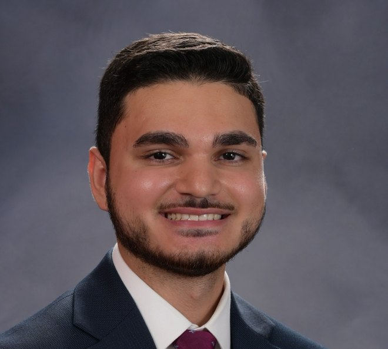

Rahul Kumar
Mechanical Engineering · Concentration in Manufacturing Engineering · Boston University ’27 · Boston, MA
Mechanical Engineering student at Boston University, Class of 2027, concentrating in Manufacturing Engineering. I design, build, and test mechatronics prototypes - from CAD to machining and 3D printing.
Featured project
Projects
What I've built.
Click on a project to see more details.
Skills
What I can actually do in the lab.
Grouped the way I use them on projects — design it, wire it, code it, print it, test it.
🛠 Design & CAD
- Mechanical design for handheld / enclosure-scale devices
- Design for 3D printing — tolerances, fits, iteration
- BOM building and component selection under budget + policy constraints
⚡ Embedded & Electronics
- ESP32 (WROOM-32, XIAO ESP32-S3) firmware in Arduino / C
- Sensors: IMU (LSM6DSOX), DHT climate sensing
- Enterprise Wi-Fi debugging — WPA2-Enterprise, PEAP / MSCHAPv2 on eduroam
- Battery systems: 1S Li-ion, protection boards, contact charging
🎛 Controls & Software
- Servo actuation and stabilization concepts for 4–9 Hz disturbance rejection
- Live web dashboards — JSON polling, history charts, gauges
- Rotary-encoder UI (EC11) + round LCD menu systems
- IR capture / replay for closed-loop fan control
🏭 Manufacturing
- SolidWorks CAD + FEA — 10 FEA iterations across 3 materials on the control arm bracket (FoS 1.5); motion analysis for the balancing beam cart
- CAM + CNC machining — HSMWorks toolpaths for the bracket; Haas Mini Mills and manual mill work in ME345
- Laser cutting, water jet, and machine shop tools; DFM on every project
- Quality — SPC (X-bar/R charts, Cp/Cpk), root-cause analysis, P&ID verification
Résumé
Rahul Kumar
Boston, MA — rahulkumar314.rk@gmail.com
Education
Boston University, College of Engineering
May 2027B.S. in Mechanical Engineering, Concentration in Manufacturing Engineering · Boston, MA · GPA: 3.5 / 4.0
Relevant Coursework: Automation & Manufacturing Methods, Product Quality, Production Systems Analysis, Electromechanical Design, Heat Transfer, Measurement & Instrumentation
Experience
CORE Quality Engineering Intern — SharkNinja
Jun 2026 – Aug 2026Needham, MA
- Built a centralized customer return root-cause tracker in Excel covering 10 SKUs and 38 failure classifications across 250+ analyzed units, with a live diagnostic dashboard that identified a defective product line and triggered a production stop to prevent further warranty and return losses
- Conducted teardowns and root cause analysis (RCA) on field returns, diagnosing failure modes and documenting findings that informed prioritization and next-gen product development learnings
- Collaborated with manufacturing quality teams in China to implement 10+ production-line fixes, including automated processes and quality checks, to resolve out-of-box defects
- Designed and built a custom wind-load test rig to benchmark next-generation prototype performance against market competitors across multiple distances and speed settings to drive hardware revisions
- Facilitated consumer satisfaction index testing to evaluate air outlet and intake geometry modifications, using empirical user data
LNG Engineering Intern — Eversource
Jun 2025 – Aug 2025Marshfield, MA
- Verified new infrastructure installation against Piping & Instrumentation Diagrams (P&IDs), identifying and reporting discrepancies that led to critical design corrections during facility construction
- Managed the full equipment and valve tagging project for a new peak-shaving LNG satellite facility, physically tagging several hundred pieces of equipment and creating a comprehensive Excel inventory with sourced vendor quotes
- Developed a systematic inspection process using check sheets, enabling lead engineers and the operations team to efficiently verify correct installation of facility assets
- Participated in cross-functional meetings with engineering and construction teams to monitor project timelines, address construction delays, and coordinate system testing procedures
Projects
Self-Stabilizing Spoon for Parkinson's
Feb 2025- Created CAD model and 3D printed prototype with ergonomic housing and latching battery compartment, achieving a total weight under 200g
- Designed electromechanical counter-actuation mechanism using a servo motor, Arduino Nano, and accelerometer/gyroscope sensor to dynamically offset rotational hand tremors
- Validated prototype across 30 test trials, achieving a 69.23% reduction in spillage for rotational tremors and 15.15% reduction in horizontal tremors at a BOM cost of $59.54
Terrier Motorsports: Control Arm Bracket
Oct 2024- Developed bracket CAD model in SolidWorks using vehicle constraints and Design for Manufacturing (DFM) principles, incorporating feedback from design review meetings
- Analyzed 10 FEA iterations across 3 material choices, modifying designs to determine the optimal option and achieve a desired factor of safety of 1.5
- Used HSMWorks CAM software for CNC and manual mill operations to manufacture the aluminum part, optimizing toolpaths and tooling to minimize production time
HPC Hygiene Product Station
Complete- Designed a custom hygiene product station in Onshape for a K-12 school in Nepal, securely storing and displaying 150+ reusable menstrual products
- Applied DFM by adapting the design to local material availability, eliminating reliance on imported materials
- Integrated low-profile hardware, friction stay mechanisms, and locking systems to maximize ergonomics within tight space constraints
- Defined safety requirements for the school setting, prioritizing stability, soft-close mechanisms, and accessibility
- Bridged the language gap with visual-first fabrication documentation and established relationships with Nepal carpenters
Automated Flexible Manufacturing Cell
- Programmed and coordinated a flexible manufacturing cell with a material transport loop and 3 stations: 2 stations with a robot arm and CNC mill, and 1 assembly station with a robot arm
ME360 Claw Machine
- Built a joystick-controlled claw machine as a 2.5-DOF motion system — 3.5 DOF counting the motor that opens and closes the claw
- X and Y linear stages move the claw, with a SolidWorks simulation of the x- and y-axis movement
- Z axis uses a carriage-mounted stepper motor that raises and lowers the claw via a pulley and string
- Servo-driven claw with two gear-linked arms, controlled by a joystick and drop button
- Laser-cut main base with slots for the vertical supports and an inclined prize chute
ME360 Balancing Beam Cart
- Designed a motorized cart to transport a 1-ft vertical prismatic bar 5–10 ft and back without toppling, with the bar supported at its bottom face only
- Calculated a theoretical tipping acceleration of 32.2 in/s² from a free-body diagram, confirmed in SolidWorks motion analysis — the reaction force at the lifting edge reached 0 N at about 32.22 in/s²
- Chose 4-in. wheels for a slight velocity buffer after testing 3, 4, 5, and 6 in. wheel diameters
- Laser-cut cardboard platform with 3D-printed axle brackets, motor mount, and wheels
- Completed the run — 9 ft each way, 18 ft total — in 18.82 s without tipping the bar
Skills
Contact
Let’s talk engineering.
Best for internships, post-graduation roles (graduating spring 2027), and project conversations — especially EVs and mechatronics.
Email and LinkedIn are live above. The GitHub profile link is still to add.
What I’m interested in
- Mechanical design roles in EV development
- Mechatronics / electromechanical product work
- Test, fixtures, and hardware validation
Based in
Boston, MA — Boston University.